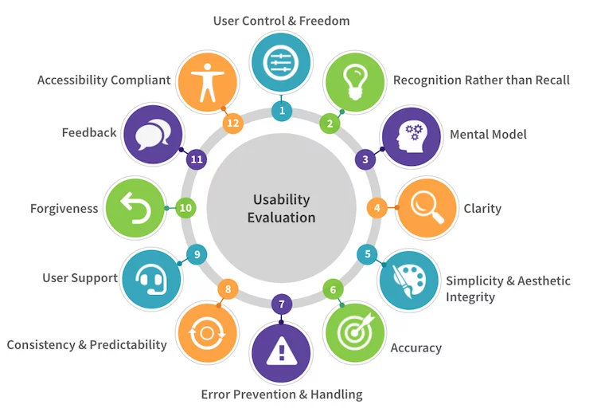

Op deze website kun je verschillende dingen doen.
Je kunt verschillende richtlijnen volgen om zelf
een goede website te maken voor verkoop.
hierin staan dingen in waar je op moet letten
om sneller en meer te verkopen.
Wat ik zeker aan raadt om te lezen en te volgen.
Je kunt met ons contact openemen door de volgende manieren.
Een mail sturen of door ons te bellen.
Ook kun je op deze site een gebruikerstest uitvoeren.
Dit is helemaal gratis.
Door deze gebruikerstest te maken kun je ons helpen
om onze website beter te maken.
Wij waarderen het als je dit zou willen doen.
Als laatste kun je op deze website lezen
wat usability nou eigenlijk precies inhoudt.
